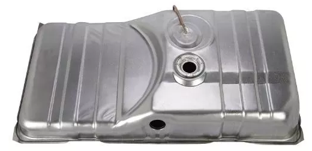

El sistema de inyección es la forma de alimentar a los motores de combustible la cual consiste en unos inyectores que se ubican en la cámara de combustión o también puede ser en el múltiple de admisión. Estos alimentan con combustible el motor.
La función básica del sistema de inyección es transportar el combustible, en conjunto con la bomba de gasolina, desde el depósito hasta los cilindros.
¿Cómo funciona?
El proceso inicia en el depósito de gasolina, ya que de aquí es de donde se extrae el combustible utilizando una bomba. Después pasa por el filtro de gasolina y continúa su camino por las líneas hasta llegar al riel de inyectores en donde están ubicados los mismos.
Partes
Entre sus partes principales podemos mencionar las siguientes:
• Depósito de combustible: Se trata de un contenedor seguro para fluidos inflamables y es donde se encuentra almacenado el combustible.

• Bomba de gasolina: Es la encargada de abastecer al sistema de forma constante de combustible. Usa un sistema de rieles de los inyectores y por medio de succión extrae el líquido del depósito de combustible.
• Líneas de gasolina: Son todas las líneas o tuberías que tiene el sistema para que el combustible se desplace hasta que llegue a los inyectores.
• Inyectores: Los inyectores pulverizan como aerosol el combustible que proviene de la línea de admisión. Básicamente, es una electroválvula que puede abrirse y cerrarse millones de veces sin que deje escapar combustible.